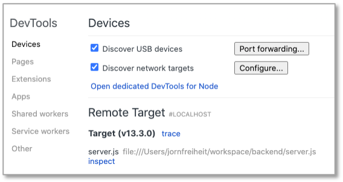
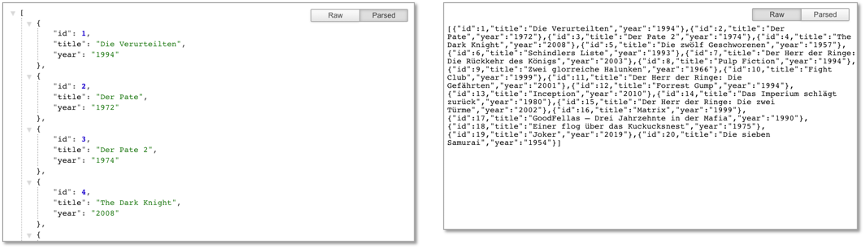
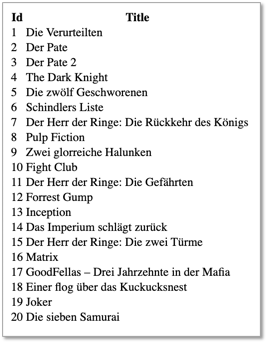
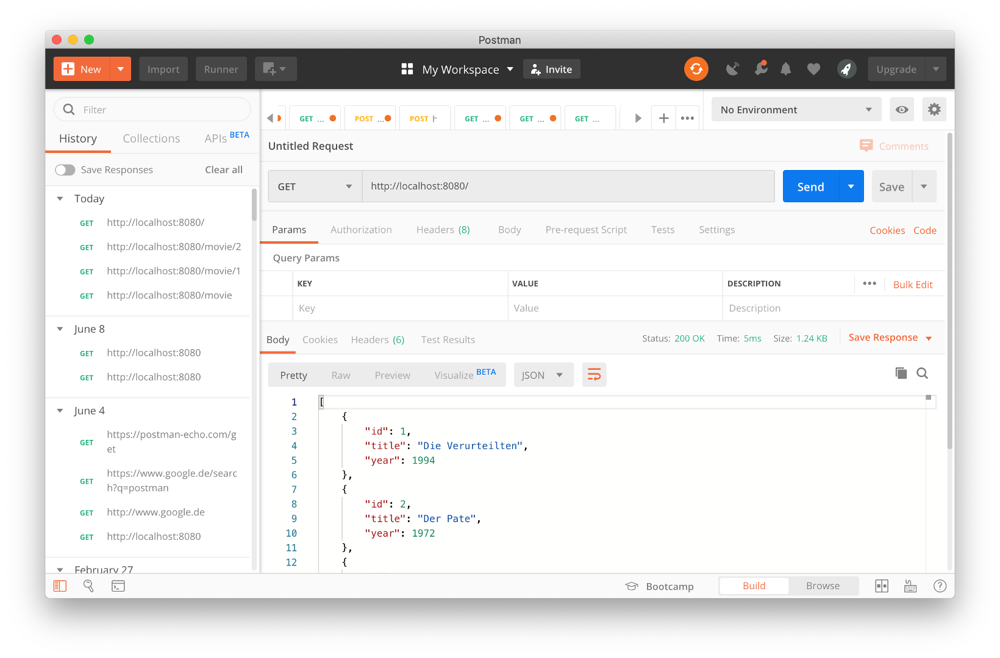
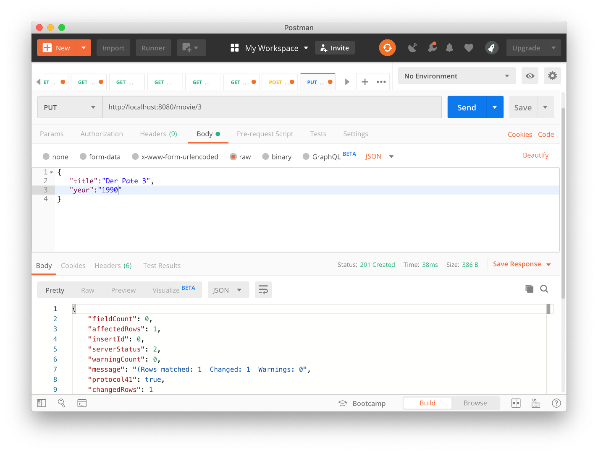
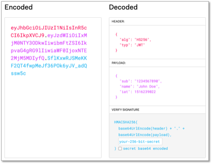

Node.js¶
Viele der folgenden Beispiele sind dem Buch
Sebastian Springer: "Node.js. Das umfassende Handbuch" 3., aktualisierte und erweiterte Auflage 2018, Rheinwerk Computing, ISBN 978-3-8362-6255-2 Link
entnommen (und nur unwesentlich geändert).

Installation¶
Installationsanweisungen für Ihr Betriebssystem finden Sie auf der Node.js-Webseite https://nodejs.org/. Nach der Installation können Sie überprüfen, ob node erfolgreich installiert wurde. Geben Sie dazu im Terminal
node -v
ein. Es sollte die Versionsnummer erscheinen, z.B. v13.3.0.
Da es sich bei JavaScript um eine Skriptsprache handelt, kann jede Anweisung durch den Interpreter interpretiert und ausgeführt werden. Deshalb lässt sich Node.js auch als im interaktiven Modus auf der Kommandozeile testen. Geben Sie dazu im Terminal
node
ein. Es erscheint etwas in der Art
Welcome to Node.js v13.3.0.
Type ".help" for more information.
>
Node.js befindet sich dann im Read-Eval-Print-Loop (REPL). Die im Terminal eingegebenen Kommandos werden gelesen (read), evaluiert (eval), ausgegeben (print) und auf das nächste Kommando gewartet (loop). Geben Sie im Terminal
console.log("Hello FIW!");
ein. Es erscheint
Hello FIW!
undefined
Sie verlassen REPL durch Eingabe von .exit.
Success
Somit ist Node.js installiert.
Der erste eigene Webserver¶
Wir verwenden Node.js, um einen Webserver zu implementieren. Insbesondere wird dieser Webserver Anfragen (requests) unserer Webanwendung (des Clients) empfangen und verarbeiten. Die Verarbeitung wird meistens ein Zugriff auf eine Datenbank sein. Als Antwort (response) wird der Webserver die angefragten Daten an unsere Anwendung zurücksenden.
Wir werden nun unseren ersten einfachen Webserver mithilfe von Node.js implementieren. Erstellen Sie sich in Ihrem workspace ein Verzeichnis backend und darin eine Datei server.js (das kann natürlich alles auch anders heißen). Öffnen Sie die Datei mit Ihrer IDE und geben Sie folgendes ein:
1 2 3 4 5 6 7 8 9 10 11 | |
Wechseln Sie im Terminal in Ihr backend-Verzeichnis. Darin befindet sich die server.js. Geben Sie ein:
node server.js
Sie erhalten die Ausgabe Server is listening to http://localhost:8080.
Port bereits belegt
Sollten Sie den Fehler Error: listen EADDRINUSE:::8080 erhalten, so ist der Port 8080 bei Ihnen bereits durch eine andere Anwendung belegt. Dann wählen Sie einen anderen Port, z.B. 8081.
Success
Ihr Webserver läuft nun!
Dies können wir auf verschiedene Arten testen:
- Geben Sie
http://localhost:8080in Ihren Browser ein. Es erscheintHello FIW!im Browser. - Nutzen Sie
curlund geben Sie im Terminalcurl http://localhost:8080ein. Es erscheintHello FIW!im Terminal. - Nutzen Sie 'Postman' und geben Sie in das Eingabefeld neben
GETdie URLhttp://localhost:8080ein und klicken aufSend. Es erscheintHello FIW!im unteren Teil des Fensters (ReiterBody).
Der Webserver läuft nun so lange, bis wir ihn beenden. Wir betrachten das obige Listing im Detail. In Zeilennummer 1 wird das http-Modul von Node.js geladen und der Variablen http zugewiesen. Das Laden von Modulen erfolgt in Node.js mithilfe der Funktion require(). In Zeilennummer 3 wird ein Webserver mithilfe des http-Moduls erzeugt (createServer()). Das http-Modul bietet auch die Möglichkeit, einen Client zu erzeugen - aber das machen wir nicht mit Node.js sondern mit Angular. In Zeile 9 geben wir an, dass der Webserver nun permanent am Port 8080 auf Anfragen lauschen soll. Als 2. Parameter der listen()-Funktion hätte auch ein HOST angegeben werden können, also die IP-Adresse des Webservers. Wird keine IP-Adresse angegeben, so wie hier, ist es in unserem Fall localhost. Dann folgt eine Callback-Funktion, die einen String auf die Konsole ausgibt, sobald die Verbindung steht. In den Zeilen 4 bis 6 ist die Antwort (response) des Webservers auf eine Anfrage (request) des Clients definiert. Die Funktion, die diese Antwort erstellt, ist eine Callback-Funktion der createServer-Funktion (in Zeile 3). Diese Callback-Funktion besitzt die beiden Parameter request und response. In diesem ersten Beispiel wird nur eine Response definiert. Diese besteht aus einem HTTP-Header (writeHead()) und einem HTTP-Body (write() + end()). Die Funktion writeHead(), die den HTTP-Header erzeugt, besitzt 2 Parameter. Der erste Parameter ist der HTTP-Status-Code. Der Status-Code 200 besagt, dass die Anfrage (request) vom Server empfangen wurde und die Antwort (response) in dieser Nachricht enthalten ist. Der eigentliche HTTP-Header wird mit dem zweiten Parameter übertragen. In diesem Fall übermittelt der Server dem Client die Informationen, dass es sich bei der Antwort um reinen Text handelt (content-type:text-plain) und dass der HTTP-Body unter Verwendung des Zeichensatzes UTF-8 (charset=utf-8) kodiert ist. Der HTTP-Body wird mit der write()-Funktion übertragen und mit der end()-Funktion abgeschlossen. In diesem Fall besteht der Body aus der Zeichenkette Hello FIW!.
Eine Erweiterung der Antwort¶
Im obigen Beispiel bestand die Antwort aus reinem Text. Wir erweitern die Antwort nun und senden vom Webserver an den Client als Body eine vollständige HTML-Seite.
1 2 3 4 5 6 7 8 9 10 11 12 13 14 15 16 17 18 19 20 21 22 | |
Achten Sie darauf, dass der content-type nun text/html ist, nicht mehr text/plain (Zeile 4). Sollte Ihr Server aus dem vorherigen Beispiel noch laufen, so müssen Sie ihn zunächst beenden. Geben Sie im Termina zum Beenden des Prozesses node server.js einfach Strg+C (Ctrl+C) und sarten Sie den Server unter Eingabe von
node server.js
erneut. Rufen Sie im Browser http://localhost:8080/ auf. Es erscheint
Sie können ja auch mal den content-type erneut auf text/plain setzen und den Server erneut starten (1. Ctrl+C und 2. node server.js), um zu sehen, welche Bedeutung die Angabe des content-type hat.
Template-String¶
Im obigen Beispiel ist der String body in Backtick-Zeichen ` eingeschlossen. Das nennt man Template-String und ermöglicht mithilfe von ${} Ausdrücke bzw. Variablen auszuwerten. Im Folgenden ist eine solche Verwendung einer Variable gezeigt.
1 2 3 4 5 6 7 8 9 10 11 12 13 14 15 16 17 18 19 20 21 22 23 | |
In Zeile 6 wird eine Variable name definiert, der der String FIW! zugewiesen wird. In Zeile 14 wird mithilfe von ${ name } der Wert der Variable name in das HTML eingebunden, so dass der Inhalt der Überschrift <h1> zu Hello FIW! ausgewertet wird.
URLs auswerten¶
Eine URL kann um Schlüssel-Werte-Paare (Parameter) erweitert werden, um Daten mit der URL an den Webserver zu senden (siehe HTML → URLs). Ein Schlüssel-Werte-Paar wird immer durch ein = verbunden:
key=value
Das erste Schlüssel-Werte-Paar wird hinter ein ? an die URL gehängt. Jedes weitere Paar wird mit einem & angebunden:
http://www.example.org/?key1=value1&key2=value2&key3=value3
Wir werden jetzt diese Parameter auswerten. Dazu laden wir einerseits ein weiteres Modul, nämlich das url-Modul und wir werten die Anfrage (request) dahingehend aus, dass wir die Parameter der URL auswerten.
1 2 3 4 5 6 7 8 9 10 11 12 13 14 15 16 17 18 19 20 21 22 23 24 25 26 | |
Nach dem restart des Webservers (1. Ctrl+C und 2. node server.js) und der Eingabe folgender URL: http://localhost:8080/?name=FIW&ort=Berlin wird im Browser Folgendes angezeigt:
Chrome Developer Tools¶
Die Chrome Developer Tools können auch zum Debuggen von Node.js-Anwendungen verwendet werden. Rufen Sie dafür Ihre Node.js-Anwendung im Terminal mit dem --inspect-Flag auf:
node --inspect server.js
Im Terminal erscheint eine Ausgabe in der Form:
Debugger listening on ws://127.0.0.1:9229/dc995a6a-61eb-4143-af7e-ac8e4599dcd7
For help, see: https://nodejs.org/en/docs/inspector
Server is listening to http://localhost:8080
Im Chrome-Browser können Sie nun einerseits wie gewohnt die URL http://localhost:8080/?name=FIW&ort=Berlin eingeben, aber das Debuggen kann unter Eingabe der URL chrome://inspect/ erfolgen. Es erscheint folgende Seite im Browser:

Für weitere Informationen zum Debuggen siehe z.B. https://nodejs.org/en/docs/guides/debugging-getting-started/.
Success
Wir haben mithilfe von Node.js einen ersten eigenen Webserver erstellt. Wir haben uns mit dem Konzept von Request und Response vertraut gemacht und eine eigene Response erstellt. Wir haben Argumente aus der URL ausgelesen und somit dynamisch unsere Response angepasst. Wir wollen nun zunächst ein Framework kennenlernen, das uns manche Arbeiten erleichtert: Express.
Express¶
Express ist ein Node.js-Framework, das einerseits recht einfach gehalten wurde, andererseits aber alle wesentlichen Funktionen für eine Web-Anwendung bereithält. So müssen wir uns beispielsweise bei der Verwendung von Express nicht mehr selbst um das Parsen der URL kümmern. Wir werden im Folgenden ein kleines Projekt zu Verwaltung von Filmen erstellen. Dies geschieht mithilfe von npm. npm ist der Node package manager. Bisher enthält unser Ordner backend nur die Datei server.js. Das ist jedoch insofern noch kein wirkliches Node.js-Projekt, da es noch nicht vom Paketmanager, also npm verwaltet wird. Um dies zu tun wechseln wir in den Ordner backend und initialisieren dann unser Node.js-Projekt:
npm init
Sie werden nun einige Sachen gefragt und können eigentlich immer jeweils mit Enter bestätigen. Es erfolgt also ungefähr ein solcher Dialog im Terminal:
% npm init
This utility will walk you through creating a package.json file.
It only covers the most common items, and tries to guess sensible defaults.
See `npm help init` for definitive documentation on these fields
and exactly what they do.
Use `npm install <pkg>` afterwards to install a package and
save it as a dependency in the package.json file.
Press ^C at any time to quit.
package name: (backend) backend
version: (1.0.0)
description: Node.js-Backend
entry point: (server.js)
test command:
git repository:
keywords:
author:
license: (ISC)
About to write to /Users/jornfreiheit/workspace/backend/package.json:
{
"name": "backend",
"version": "1.0.0",
"description": "Node.js-Backend",
"main": "server.js",
"scripts": {
"test": "echo \"Error: no test specified\" && exit 1",
"start": "node server.js"
},
"author": "",
"license": "ISC"
}
Is this OK? (yes)
Das wesentliche Ergebnis der Initialisierung ist die Erstellung der package.json-Datei. Darin können wir Paketabhängigkeiten definieren. Außerdem ist in dem Ordner backend ein Unterordner node_modules entstanden, der die Node.js-Module enthält, die wir benötigen.
Als erstes installieren wir Express:
npm install express
Nun bauen wir uns eine kleine index.js-Datei, die unsere erste Express-Anwendung darstellt.
1 2 3 4 5 6 7 8 9 10 | |
In Zeile 1 wird das Express-Paket eingebunden. In Zeile 2 wird eine Express-App mit Basiskonfiguration erzeugt (hier ein app-Objekt). Die get()-Funktion des app-Objektes erzeugt eine Route, über die man sich mit dem Browser mit der App verbinden kann (Zeilen 4-6). Als Response (res) wird einfach eine Zeichenkette gesendet (send). In den Zeilen 8-10 wird die App an den Port 8080 gebunden. Hier erfolgt intern die Erstellung eines Node.js-Servers mit http-Modul. Wenn Sie nun
node index.js
innerhalb des backend-Ordners aufrufen, wird der Node.js-Server erstellt und Sie können im Browser unter der URL localhost:8080 darauf zugreifen. Es erscheint:

Im obigen Beispiel erkennt man in Zeile 4 zwei Parameter der Routing-Callback-Funktion innerhalb der app.get()-Methode: das Request-Objekt req und das Response-Objekt res. Beide Objekte gehören zu den elementaren Elementen einer Applikation.
Request¶
Die Eigenschaften des Request-Objektes req sind in https://expressjs.com/de/api.html#req erläutert. Hier folgt eine kurze unvollständige Auflistung:
| Eigenschaft | Bedeutung |
|---|---|
method |
HTTP-Methode, mit der die Anfrage gesendet wurde (z.B. GET oder POST) |
originalUrl |
enthält die Anfrage-URL |
params |
enthält die variablen Anteile der Anfrage-URL |
protocol |
enthält das Protokoll der Anfrage (z.B. http oder https) |
query |
ist ein Objekt, das alle Parameter der Anfrage-URL enthält |
Response¶
Die Eigenschaften des Response-Objektes res sind in https://expressjs.com/de/api.html#res erläutert. Hier folgt eine kurze unvollständige Auflistung:
| Methode | Bedeutung |
|---|---|
get(field) |
gibt den Response-Header von field zurück (z.B. get('Content-Type')) |
set(field[,value]) |
setzt den Wert des angegebenen Header-Feldes |
json([body]) |
sendet eine JSON-Response ([body] ist das JSON-Objekt) |
cookie(name,value[,options]) |
setzt einen Cookie-Wert name=value |
redirect([status,]path) |
Weiterleitung der Anfrage nach path |
status(code) |
setzt den Status der Antwort auf code |
send([body]) |
sendet die HTTP-Antwort |
end([data][,encoding]) |
beendet den Antwortprozess |
Router¶
Wie man der API-Dokumentation von Express entnehmen kann, sind die Grundelemente einer Express-Anwendung
- die
express()-Funktion, die die Express-Anwendung erstellt, - die Eigenschaften und Methoden, die dieser Anwendung zur Verfügung stehen,
- das
Request-Objekt, - das
Response-Objekt sowie - der
Router.
Mit Letzterem beschäftigen wir uns jetzt. Unser Projekt soll folgende Struktur aufweisen:
backend
+---- movie
| +---- model.js
| +---- view.js
| +---- controller.js
| +---- movierouter.js
+---- node_modules
+---- index.js
+---- package.json
backend, movie und node_modules sind jeweils Ordner. node_modules wurde automatisch erzeugt (durch npm init und enthält alle eingebundenen Node.js-Pakete). Wir erstellen zunächst die Datei movie/movierouter.js1 und "specken" die index.js etwas ab (die get()-Funktion wird gelöscht).
1 2 3 4 5 6 7 8 9 10 | |
1 2 3 4 5 6 7 | |
1 2 3 4 5 6 7 8 9 10 11 12 13 14 15 16 17 18 19 20 21 22 | |
Beachten Sie, dass in den obigen Listings aus Gründen der Übersichtlichkeit in der movie/movierouter.js das JSON-Objekt herausgelöscht und im Reiter "const data" zur Verfügung gestellt wurde (muss dann hineinkopiert werden).
In der movie/movierouter.js wird das Router-Objekt, das in Zeile 2 erzeugt wird, in Zeile 10 exportiert. Im Folgenden wird gezeigt, wie der Router nun in unsere Anwendung eingebunden wird. Dies passiert in der index.js. Die hinzugefügten Zeilen sind markiert.
1 2 3 4 5 6 7 8 9 10 11 12 | |
Beim Laden des Moduls wird die .js-Endung nicht mit angegeben. Das heißt, der Router wird aus der movie/movierouter.js-Datei mittels require('./movie/movierouter') geladen (siehe Zeile 2). Wäre der Router sogar in einer Datei movie/index.js, müsste dieser Name nicht angegeben werden, es würde also genügen, den Router über den Pfad /movie zu laden (entspricht also /movie/index). Die use()-Methode in Zeile 8 gibt an, dass der movieRouter (aus movie/index.js) für das Routing des Pfades url/movie zuständig ist. Die get()-Methode aus Zeile 6 sorgt dafür, dass der Aufruf url/ (also z.B. localhost:8080) nach url/movie (also z.B. localhost:8080/movie) weitergeleitet wird.
Rufen Sie nun im backend-Ordner
node index.js
auf und geben Sie im Browser localhost:8080 ein. Beobachten Sie, dass auf die URL localhost:8080/movie weitergeleitet wird. Es erscheint im Browser (entweder parsed oder raw - Abhängig von Browser und Browser-Plugins):

Model-View-Controller¶
Bis jetzt steckt alles im Router (/movie/movierouter.js). Wir werden im ersten Schritt die Daten (die eigentlich zum Model gehören) und eine Aktion (listAction) im Controller (movie/controller.js) definieren.
1 2 3 4 5 6 7 8 9 | |
1 2 3 4 5 6 7 8 | |
1 2 3 4 5 6 7 8 9 10 11 12 13 14 15 16 17 18 19 20 21 22 | |
Controller¶
Der Controller verwaltet perspektivisch die View und das Model. Beides haben wir jetzt noch nicht. Zunächst wird im Controller eine Aktion listAction definiert, die alle Daten in einer Response (response.send(data)) sendet2. Diese Aktion wird mittels exports anderen Modulen zur Verfügung gestellt.
Der Router (movierouter.js) wurde entsprechend angepasst. Einerseits haben wir die Daten aus dem Router entfernt, andererseits enthält die get()-Methode nun nicht mehr die direkte Implementierung (die ja in den Controller ausgelagert wurde), sondern ruft die Methode listAction des Controllers auf. Dazu muss sie eingebunden werden. Dies würde normalerweise wie folgt geschehen:
const controller = require('./controller');
const listAction = controller.listAction;
Da ein solches Konstrukt häufig vorkommt, wurde ein sogenanntes destructuring eingeführt. Obiger Code wird mithilfe von destructuring durch
const { listAction } = require('./controller');
ersetzt und verzichtet somit auf die Hilfsvariable controller. Die Eigenschaft, die im Controller listAction heißt (und importiert wird), wird direkt geladen.
Model¶
Das Model (movie/model.js) verwaltet die Daten. Dazu werden wir zunächst die Daten aus dem Controller in das Model verschieben. Außerdem stellt das Model eine Funktion (getAll()) zum Auslesen aller Daten zur Verfügung:
1 2 3 4 5 6 7 | |
1 2 3 4 5 6 7 8 9 | |
1 2 3 4 5 6 7 8 9 10 11 12 13 14 15 16 17 18 19 20 21 22 | |
Die Funktion getAll() im Model (movie/model.js) wird jetzt direkt dort implementiert, wo sie auch exportiert wird. Die Implementierung hätte man auch auf eine Variable legen können (wie listAction beim Controller) und dann exportieren.
Der Controller (movie/controller.js) liest das Model ein (Zeile 1) und verwendet die getAll()-Funktion, um die Daten zu senden (Zeile 4).
View¶
Die View ist für die Darstellung verantwortlich. Später wird diese von uns in Angular umgesetzt. Hier wird es nur zur Verdeutlichung gezeigt. Wir verwenden JavaScript-Template-Strings (sozusagen eine Mischung aus JavaScript und HTML). Wer möchte, kann diesen Abschnitt auch überspringen, da wir später unsere Oberfläche viel aufwendiger mit Angular gestalten.
1 2 3 4 5 6 7 8 9 10 11 12 13 14 15 16 17 18 19 20 21 22 23 24 | |
1 2 3 4 5 6 7 8 9 10 11 12 | |
In der View (movie/view.js) wird also eine HTML-Tabelle (<table>) erzeugt. Der Funktion render werden die anzuzeigenden Daten als JSON-Array übergeben. Die JavaScript-Funktion map() durchläuft jeden einzelnen Eintrag des Arrays und speichert ihn jeweils in die Variable movie. Jeder movie wird in einer Tabllenzeile (<tr>) dargestellt und besteht aus einer id und einem title (siehe const data im Model). Auf diese Elemente wird zugegriffen und in einzelnen Dateneinträgen der Tabelle (<td>) dargestellt. Die JavaScript-Funktion join() verbindet diese Struktur zu einem String (Konkatenation mit ''), so dass der Template-String tatsächlich ein String ist.
Im Controller (movie/controller.js) wird die View eingebunden (Zeile 2) und dieser View die Movie-Daten übergeben, so dass body dann den durch movie.render() erzeugten String enthält (die HTML-Seite). Dieser wird als Response gesendet.
Nach einem Neustart der Anwendung (node index.js im Ordner backend) erscheint im Browser (localhost:8080) folgende Seite:

Success
Wir haben mit Express das bekannteste Node.js-Framework verwendet, um die Verarbeitung von Daten im Rahmen des Model-View-Controller-Konzeptes umzusetzen. Im obigen Beispiel haben wir die Daten (die Filme) direkt im JSON-Format im Model gespeichert. Das ist natürlich nicht flexibel. Wir werden die Daten nun in eine Datenbank auslagern.
Anbindung von Datenbanken¶
Wir wollen Node.js hauptsächlich dafür verwenden, im Backend mit einer Datenbank zu kommunizieren. Wir wollen dies hier exemplarisch mit MySQL (siehe Werkzeuge → MySQL) erläutern. Die Verwendung von z.B. PostgreSQL ist äquivelent - Sie benötigen nur einen anderen Datenbanktreiber.
Wir werden zunächst das Node.js-Paket, das den mysql-Treiber enthält, installieren:
npm install mysql
Danach ist in der package.json die Abhängigkeit vom mysql-Paket hinterlegt (siehe "dependencies"):
{
"name": "backend",
"version": "1.0.0",
"description": "Node.js-Backend for MySQL",
"main": "server.js",
"scripts": {
"test": "echo \"Error: no test specified\" && exit 1",
"start": "node server.js"
},
"author": "",
"license": "ISC",
"dependencies": {
"mysql": "^2.18.1"
}
}
Eine Movie-Datenbank¶
Wir werden die Anbindung von Datenbanken exemplarisch an der Movie-Datenbank zeigen, die wir bereits im obigen Express-Abschnitt verwendet haben. Dazu erstellen wir uns eine Datenbank namens movie-db und befüllen diese mit einigen Filmen (Tabelle Movie). Sie können diese Datenbak auf verschiedenen Wegen erstellen. Am einfachsten ist es, wenn Sie phpMyadmin verwenden. Dort können Sie folgende SQL-Anfrage im Reiter SQL eingeben (Sie können auch im Terminal SQL-Anfragen eingeben nachdem Sie sich dort per mysql -u root -p mit dem MySQL-Server verbunden haben):
CREATE DATABASE `movie-db`;
USE `movie-db`;
CREATE TABLE `Movies` (
`id` int(11) NOT NULL AUTO_INCREMENT,
`title` varchar(255) DEFAULT NULL,
`year` int(11) DEFAULT NULL,
PRIMARY KEY (`id`)
) ENGINE=InnoDB DEFAULT CHARSET=utf8;
INSERT INTO `Movies` (`title`, `year`) VALUES
('Die Verurteilten', '1994'),
('Der Pate', '1972'),
('Der Pate 2', '1974'),
('The Dark Knight', '2008'),
('Die zwölf Geschworenen', '1957'),
('Schindlers Liste', '1993'),
('Der Herr der Ringe: Die Rückkehr des Königs', '2003'),
('Pulp Fiction', '1994'),
('Zwei glorreiche Halunken', '1966'),
('Fight Club', '1999'),
('Der Herr der Ringe: Die Gefährten', '2001'),
('Forrest Gump', '1994'),
('Inception', '2010'),
('Das Imperium schlägt zurück', '1980'),
('Der Herr der Ringe: Die zwei Türme', '2002'),
('Matrix', '1999'),
('GoodFellas – Drei Jahrzehnte in der Mafia', '1990'),
('Einer flog über das Kuckucksnest', '1975'),
('Joker', '2019'),
('Die sieben Samurai', '1954');
Wir verwenden das Projekt, das wir bereits im obigen Express-Abschnitt verwendet haben, also die Dateien aus backend:
backend
+---- movie
| +---- model.js
| +---- view.js
| +---- controller.js
| +---- movierouter.js
+---- node_modules
+---- index.js
+---- package.json
Zunächst ändern wir die movie/model.js. Darin werden nun nicht mehr die Daten gehalten, sondern die Verbindung zur Datenbank aufgebaut. Außerdem sehen wir 4 Funktionen zur Datenverwaltung vor, wovon wir eine (getAll()) gleich implementieren3:
const mysql = require('mysql');
const connection = mysql.createConnection({
host: 'localhost',
user: 'root',
password: 'password', /* hier muss Ihr Passwort hin */
database: 'movie-db',
});
connection.connect();
function getAll() {
return new Promise((resolve, reject) => {
const query = 'SELECT * FROM Movies';
connection.query(query, (error, results) => {
if(error) reject(error);
else resolve(results);
})
});
}
module.exports = {
getAll,
};
const model = require('./model');
const view = require('./view');
function listAction(request, response) {
model.getAll().then(
movies => {
response.send(view(movies));
},
error => response.send(error),
);
}
module.exports = {
listAction,
};
Im Model (/movie/model.js) wird zunächst die Verbindung zur Datenbank aufgebaut (Zeilen 2-7 und connection.connect()). Die getAll()-Funktion stellt mithilfe von connection.query() eine Anfrage an die Datenbank (erster Parameter der connection.query()-Funktion). In unserem Beispiel ist die Anfrage die SQL-Query SELECT * FROM Movies.
Die getAll()-Funktion gibt ein Promise-Objekt zurück. Promises werden in JavaScript→Promises erläutert.
Im Controller (/movie/controller.js) wird das Promise-Objekt in der then-Funktion ausgewertet. Wird in der Promise die resolve-Methode aufgerufen, werden die results übergeben, also das Ergebnis der Datenbankanfrage. Diese Werte werden in der ersten Callback-Funktion der then-Methode dem Parameter movies übergeben. Soll nur das JSON gesendet werden, wird die view nicht benötigt (statt response.send(view(movies)); genügt dann response.send(movies);). Hier kapselt die View die Daten noch in einen HTML-Template-String.
Im Falle eines Fehlers ruft die Promise die reject-Funktion auf und übergibt den Parameter error. Diese Funktion ruft dann in der then-Funktion die zweite Callback-Funktion für die Fehlerauswertung auf.
Success
Wir haben jetzt eine MySQL-datenbank angebunden und die Anbindung anhand einer getAll()-Funktion, die alle in der Datenbank gespeicherten Filme zurückgibt, gezeigt. Wir haben somit einen lesenden Zugriff auf alle Datenbankeinträge realisiert. Im folgenden werden wir auch weitere Zugriffe (create, update, delete) umsetzen. Allerdings haben wir bisher auch eine View mithilfe von Node.js erstellt und verwendet. Die Idee im folgenden ist, dass unser Backend nicht mehr für die Darstellung zuständig ist, sondern die Ergebnisse der Datenbankabfragen im JSON-Format zurückgibt. Unser mit Angular erstelltes Frontend soll für die Darstellung zuständig sein. Wir stellen unser Backend vollständig auf das REST-Konzept um.
Unser Backend als reiner REST-Server¶
Representional State Transfer (REST) ist ein Architekturkonzept und wird in vielen Webanwendungen verwendet. REST beschreibt die Schnittstelle zwischen Frontend und Backend und ist dabei sehr stark an HTTP angelehnt:
- jede Ressource wird über eine eindeutige URL aufgerufen (z.B. alle Filme über
localhost:8080/movies, den Film mit derid=3überlocalhost:8080/movie/3) - es wird definiert, mit welcher HTTP-Anfrage auf die Ressource zugegriffen wird (z.B.
getzum Lesen,postzum Anlegen,putzum Ändern von Ressourcen) - jede Anfrage ist zustandslos, d.h. eine Anfrage muss alle notwendigen Informationen beinhalten und frühere Anfragen (und deren Responses) werden nicht gespeichert
Wir werden unsere View im Backend von nun an also nicht mehr benötigen. Unser Projekt sieht derzeit so aus:
const express = require('express');
const movieRouter = require('./movie/movierouter');
const app = express();
app.get('/', (req, res) => res.redirect('/movie'));
app.use('/movie', movieRouter);
app.listen(8080, () => {
console.log('Server listening on port 8080');
});
const mysql = require('mysql');
const connection = mysql.createConnection({
host: 'localhost',
user: 'root',
password: 'password', /* hier muss Ihr Passwort hin */
database: 'movie-db',
});
connection.connect();
function getAll() {
return new Promise((resolve, reject) => {
const query = 'SELECT * FROM Movies';
connection.query(query, (error, results) => {
if(error) reject(error);
else resolve(results);
})
});
}
module.exports = {
getAll,
};
const model = require('./model');
function listAction(request, response) {
model.getAll().then(
movies => {
response.send(movies);
},
error => response.send(error),
);
}
module.exports = {
listAction,
};
const express = require('express');
const router = express.Router();
const { listAction } = require('./controller');
router.get('/', listAction);
module.exports = router;
Geben wir also die die URL localhost:8080 an, dann passiert folgendes:
- die Route wird weitergeleitet an
localhost:8080/movie(siehe inindex.jsdie Anweisungapp.get('/', (req, res) => res.redirect('/movie'));) - dadurch wird der
movie/movierouter.jsaufgerufen und dieser ruft die FunktionlistActionauf listActionruft die Promise auf, die in der Funktionmodel.getAll()definiert wird- in
getAll()erfolgt eine Anfrage an die Datenbank - wird diese Anfrage erfolgreich ausgeführt, ruft die Promise die
resolve-Funktion auf und übergibt alle Resultate der Anfrage - in
listActionwerden diese Resultate als Resonse gesendet
Wir rufen Postman zum Testen dieser Anfrage auf und geben localhost:8080 in das URL-Feld ein und senden die Anfrage mittels GET-Methode ab. Es erscheint:

Das gleiche Ergebnis bekommen wir, wenn wir als URL localhost:8080/movie eingeben (darauf wird ja eh umgeleitet). Wir können die Ausgabe auch mithilfe von curl testen:
% curl http://localhost:8080/movie
[{"id":1,"title":"Die Verurteilten","year":1994},{"id":2,"title":"Der Pate","year":1972},{"id":3,"title":"Der Pate 2","year":1974},{"id":4,"title":"The Dark Knight","year":2008},{"id":5,"title":"Die zwölf Geschworenen","year":1957},{"id":6,"title":"Schindlers Liste","year":1993},{"id":7,"title":"Der Herr der Ringe: Die Rückkehr des Königs","year":2003},{"id":8,"title":"Pulp Fiction","year":1994},{"id":9,"title":"Zwei glorreiche Halunken","year":1966},{"id":10,"title":"Fight Club","year":1999},{"id":11,"title":"Der Herr der Ringe: Die Gefährten","year":2001},{"id":12,"title":"Forrest Gump","year":1994},{"id":13,"title":"Inception","year":2010},{"id":14,"title":"Das Imperium schlägt zurück","year":1980},{"id":15,"title":"Der Herr der Ringe: Die zwei Türme","year":2002},{"id":16,"title":"Matrix","year":1999},{"id":17,"title":"GoodFellas – Drei Jahrzehnte in der Mafia","year":1990},{"id":18,"title":"Einer flog über das Kuckucksnest","year":1975},{"id":19,"title":"Joker","year":2019},{"id":20,"title":"Die sieben Samurai","year":1954}]
Wir erweitern unsere Schnittstelle zunächst um die Ansicht eines einzelnen Films. Wir wollen nun mit der URL http://localhost:8080/movie/3 den Film angezeigt bekommen, der die id 3 hat. Wir wollen also die URLs um die Angabe einer id erweitern und für diesen Endpunkt den entsprechenden Film zurückgesendet bekommen.
Dazu erweitern wir (untem im Listing jeweils gelb markiert)
- die
movie/model.jsum eine FunktiongetOne(id); das Model stellt nach außen die Funktionget(id)zur Verfügung, die als Response den Film sendet, der die entsprechendeidhat, - die
movie/controller.jsum eine FunktiondetailAction(), die den Parameteridaus der URL ausliest und die Funktionmodel.get(id)aufruft, - den
movie/movierouter.jsum eine weitere Route, nämlichrouter.get('/:id', detailAction);, so dass eineidan die URL gehängt werden kann und für diesen Fall diedetailActionaufgerufen wird
1 2 3 4 5 6 7 8 9 10 11 12 13 14 15 16 17 18 19 20 21 22 23 24 25 26 27 28 29 30 31 32 33 34 | |
1 2 3 4 5 6 7 8 9 10 11 12 13 14 15 16 17 18 19 20 21 22 23 | |
1 2 3 4 5 6 7 8 | |
Content-Type und Fehlerbehandlung¶
Zwar senden wir bereits die Resultate der Requests als JSON zurück, jedoch ist der content-type unserer Response noch content-type:text/html, da wir die Response mithilfe der send()-Funktion senden (response.send()). Wir ändern dies in response.json(). Dadurch teilen wir dem Client mit, dass der gesendetete content-type ein JSON ist (content-type:application/json).
Für eine erfolgreiche Bearbeitung eines Requests wird mit der Response der HTTP-Statuscode 200 gesendet. Für den Fehlerfall wollen wir nun dafür sorgen, dass der HTTP-Statuscode 500 - Internal Server Error übertragen wird. Dies erreichen wir im Fehlerfall mit error => response.status(500).json(error). Unser Controller sieht nun also so aus:
1 2 3 4 5 6 7 8 9 10 11 12 13 14 15 16 17 18 19 20 21 22 | |
POST - einen neuen Datensatz anlegen¶
Um einen neuen Datensatz anzulegen, müssen wir zwei Dinge beachten:
- die HTTP-Anfrage ist
POST(anstelle vonGET, das wir zum Lesen verwenden) - der Request übergibt im Body den neuen Datensatz (als JSON) → dazu benötigen wir das Paket
body-parservon Node.js und nutzen davon diejson()-Funktion zum Einlesen des neuen Datensatzes im JSON-Format
Wir passen zunächst die index.js entsprechend an:
1 2 3 4 5 6 7 8 9 10 11 12 13 14 15 | |
Um nun einen neuen Datensatz in der Datenbank anzulegen, erweitern wir unser Projekt wie folgt:
- in
movie/model.jswird eineinsert()-Funktion definiert, welche durch einesave()-Funktion aufgerufen wird (save()wird nach außen zur Verfügung gestellt4), - in
movie/controller.jswird einecreateAction()definiert, die den neuen Datensatz aus demrequest,bodyausliest und diemodel.save()aufruft, - in
movie/movierouter.jswird der neue Endpunktrouter.post('/', createAction);festgelegt
1 2 3 4 5 6 7 8 9 10 11 12 13 14 15 16 17 18 19 20 21 22 23 24 25 26 27 28 29 30 | |
1 2 3 4 5 6 7 8 9 10 11 12 13 14 15 16 17 18 19 20 21 22 | |
1 2 3 4 5 6 7 8 9 | |
Die Funktionen im Model haben alle den gleichen Aufbau. Es wird eine Promise erzeugt und mithilfe von connection.query() eine Anfrage an die Datenbank gestellt. Im Erfolgsfall wird die resolve()-Funktion der Promise aufgerufen, im Fehlerfall die reject()-Funktion. Im Controller wird der request verarbeitet und eine response erzeugt. Im Router werden die Endpunkte und die dazugehörigen HTTP-Methoden (z.B. get oder post) definiert.
Um die createAction-Funktion zu testen, rufen wir Postman auf und tragen in die URL http://localhost:8080/movie/ ein. Wichtig: es muss nun POST ausgewählt werden. Mit dem Request übergeben wir im Body nun ein JSON, das einen neuen Film enthält, d.h. das JSON muss die Eigensc haften title und year enthalten (nicht id, denn diese wird automatisch durch das Datenbanksystem erzeugt). Die Anfrage sieht in Postman wie folgt aus:

Es kann auch mit curl getestet werden:
curl -X POST -H "Content-Type: application/json" -d '{"title": "Noch ein Test", "year": "2019"}' http://localhost:8080/movie
{"fieldCount":0,"affectedRows":1,"insertId":23,"serverStatus":2,"warningCount":0,"message":"","protocol41":true,"changedRows":0}
PUT - einen Datensatz ändern¶
Das Ändern eines Datensatzes erfolgt in ähnlicher Weise wie das Anlegen eines Datensatzes. Es wird im Body der Anfrage das neue JSON gesendet und der Content-Type der Anfrage ist application/json (im Header gesetzt).
Zum Ändern eines Datensatzes wird die HTTP-Methode put verwendet. Um nun einen Datensatz in der Datenbank zu ändern, erweitern wir unser Projekt wie folgt:
- in
movie/model.jswird eineupdate()-Funktion definiert, welche durch diesave()-Funktion aufgerufen wird (save()wird nach außen zur Verfügung gestellt), - in
movie/controller.jswird eineupdateAction()definiert, die genauso aussieht wie diecreateAction(), außer dass dieidaus der URL ausgelesen wird und nicht aus dem Request-Body - in
movie/movierouter.jswird der neue Endpunktrouter.put('/', updateActionAction);festgelegt
1 2 3 4 5 6 7 8 9 10 11 12 13 14 15 16 17 18 19 20 21 22 23 24 25 26 27 28 29 30 31 32 | |
1 2 3 4 5 6 7 8 9 10 11 12 13 14 15 16 17 18 19 20 21 22 23 24 | |
1 2 3 4 5 6 7 8 9 10 | |
Um die Update-Funktion in Postman auszuprobieren, geben Sie als URL z.B. http://localhost:8080/movie/3 ein (um den Film mit der id=3 zu ändern) und wählen als HTTP-Methode PUT. Im Request-Body geben Sie dann z.B.
{
"title":"Der Pate 3",
"year":"1990"
}
ein. Sie erhalten:

Natürlich können Sie zum Testen auch curl verwenden. Die Anfrage ist ähnlich zur POST-Anfrage, nur mit curl -X PUT.
DELETE - einen Datensatz ändern¶
Um einen Datensatz zu löschen, wählen wir die HTTP-Methode DELETE. Alles andere bleibt wie gehabt. Wir präsentieren gleich die Lösung:
1 2 3 4 5 6 7 8 9 10 11 12 13 14 15 16 17 18 19 20 21 22 23 24 25 26 27 28 29 30 31 32 33 34 | |
1 2 3 4 5 6 7 8 9 10 11 12 13 14 15 16 17 18 19 20 21 22 23 24 | |
1 2 3 4 5 6 7 8 9 10 11 | |
Success
Wir haben nun eine vollständige REST-Schnittstelle des Backends implementiert. Es können alle Datensätze oder ein Datensatz gelesen (read mithilfe von get), ein Datensatz erzeugt (create mithilfe von post), ein Datensatz aktualisiert (update mithilfe von put) und ein Datensatz gelöscht (delete mithilfe von delete) werden.
JSON Web Tokens zur Authentifizierung¶
Unsere Backend-Schnittstelle ist bis jetzt offen für jeden, d.h. jeder, der die Endpunkte kennt, kann die Ressourcen abfragen und somit Daten auslesen, löschen, ändern usw. Das kann natürlich nicht richtig sein, insbesondere wenn mit sensiblen Daten gearbeitet wird. Wir können im Backend auch nicht ein Anmeldeformular vorsehen, da das Backend nur Services anbietet. Außerdem ist die Kommunikation mit der REST-Schnittstelle zustandslos, d.h. es kann gar nicht gespeichert werden, ob eine Nutzerin bereits angemeldet ist oder nicht. Eine Lösung für diese Probleme sind JSON Web Tokens (JWT).
Ein JWT ist eine codierte Zeichenkette, die einen Header enthält, einen Payload und eine Signatur. Hier ein Screenshot der jwt.io-Webseite mit einem Beispiel dafür:

Datenbank und Model¶
Wir erzeugen zunächst eine Tabelle in unserer Datenbank, um Nutzername und zugehöriges Passwort zu speichern.
Erzeugen eines JWT¶
Für die Erzeugung eines JWT verwenden wir das Nodes-Paket jsonwebtoken. Dieses installieren wir im Ordner backend mit dem Befehl
npm install jsonwebtoken
Wir erstellen uns eine Route, über die die Benutzer ihre Anmeldedaten an das Backend schicken können
-
Die Bezeichnung
movierouter.jsfür diese Datei ist hier noch verwirrend, da sie zunächst auch die Daten enthalten wird. Wir werden nach und nach die Funktionen so gestalten und auslagern, dass die Datei nur noch den Router enthält und für alles andere ein Model, eine View und ein Controller entstehen werden. ↩ -
Beachten Sie auch hier wieder, dass aus Gründen der Übersichtlichkeit die Daten in den Reiter
const dataausgelagert wurden. Die müssen Sie hineinkopieren. ↩ -
Achten Sie darauf, Ihr korrektes Passwort einzutragen. ↩
-
Wir werden die
save()-Funktion später noch erweitern. Beim Anlegen eines neuen Datensatzes werden zwar der Titel und das Entstehungsjahr des Films mitgesendet, nicht jedoch dieid. Dieidwird durch das Datenbanksystems vergeben. Für den Fall, dass dersave()-Funktion auch dieiddes Films mitgegeben wird, gehen wir davon aus, dass der Film in der Datenbank aktualisiert (update()) wird, sich also ein Eintrag geändert hat. ↩